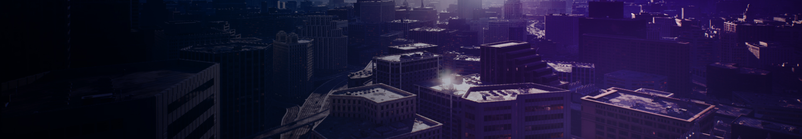
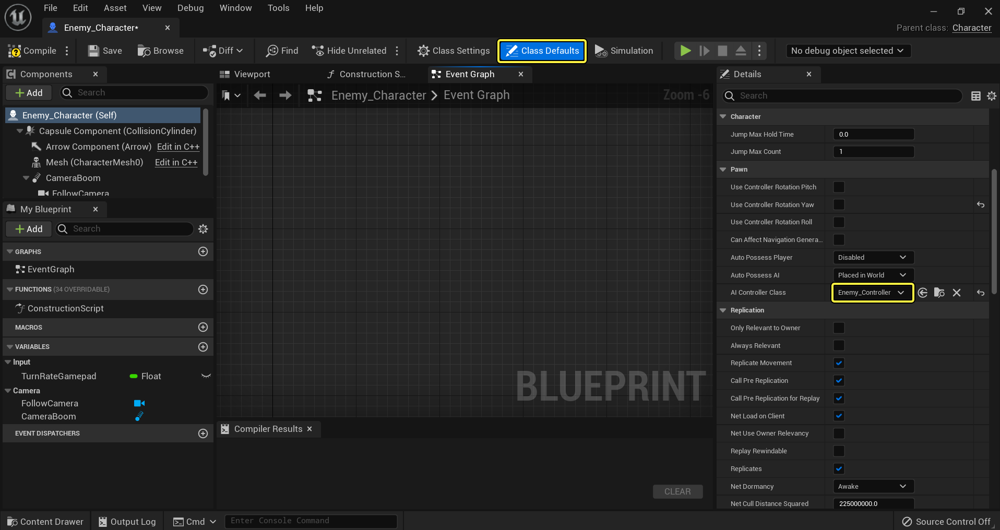
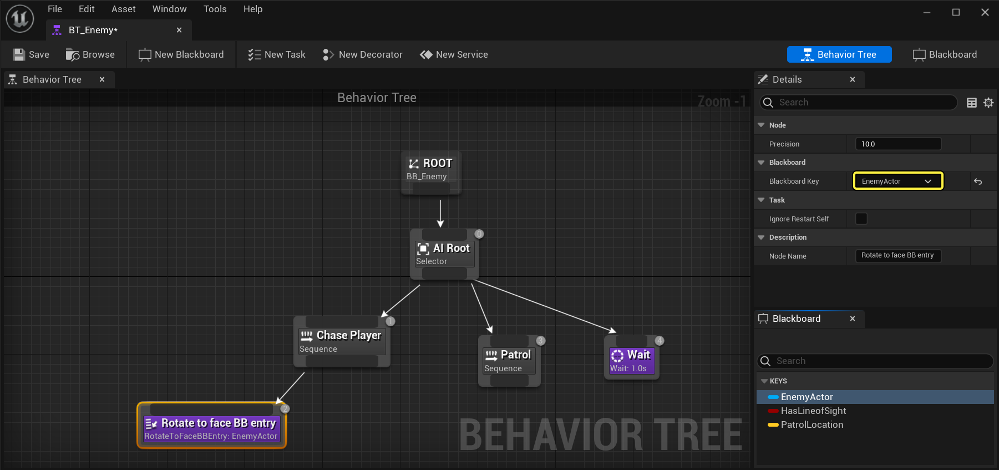
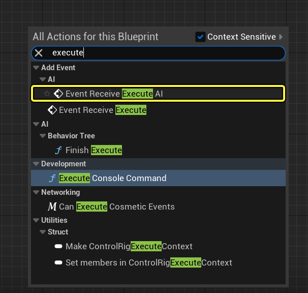

🎮 Creación de IA en Unreal Engine
Desarrollado por: Xochitl
✦ ˚₊·🍮🤍⋆｡˚ ✦
🎯 Guía rápida de inicio del árbol de comportamiento
En la Guía de Inicio Rápido del Árbol de Comportamiento, aprenderás a crear una IA enemiga que responda al ver al jugador y proceda a perseguirlo. Al perder de vista al Jugador, tras unos segundos (ajustables), la IA dejará de perseguir y se moverá aleatoriamente por el entorno hasta volver a ver al Jugador.

Esta guía muestra cómo utilizar árboles de comportamiento para configurar un personaje de IA que patrullará o perseguirá a un jugador. Al final comprenderás los siguientes sistemas:
- Scripting visual de Blueprint
- Controladores de IA
- Pizarras (Blackboard)
- Árboles de comportamiento
- Servicios, Decoradores y Tareas
1️⃣ Configuración de proyecto requerida
Configuramos nuestro proyecto con los recursos necesarios para que el personaje de IA se desplace por el entorno. Utilizamos una plantilla en tercera persona de Blueprint.
- Abra el Cajón de Contenido → carpeta
ThirdPerson→ crear nueva carpeta AI. - Copie
BP_ThirdPersonCharactera la carpeta AI → renómbrelo como Enemy_Character. - Cree un nuevo Blueprint basado en
AIController→ nómbrelo Enemy_Controller. - Abra Enemy_Character, elimine script del gráfico y configure
Max Walk Speed = 120.0en el componente CharacterMovement. - Asigne Enemy_Controller como clase de controlador IA en "Valores predeterminados de clase".
- Arrastre Enemy_Character al nivel y agregue un NavMeshBoundsVolume escalado para cubrir todo el nivel (presione P para visualizar NavMesh).





Mostrar navegación en consola para visualizar el NavMesh.2️⃣ Configuración de la Pizarra (Blackboard)
El Blackboard es el "cerebro" de la IA: almacena claves para rastrear al jugador, línea de visión y ubicaciones de patrulla.
- En el cajón de contenido → +Agregar → Inteligencia artificial → Pizarra → nómbrela BB_Enemy.
- Agregue claves:
- EnemyActor (tipo
Object, clase baseActor) - HasLineOfSight (tipo
Bool) - PatrolLocation (tipo
Vector)
- EnemyActor (tipo


✅ La pizarra está lista para ser usada en el árbol de comportamiento.
3️⃣ Diseño del árbol de comportamiento
Creamos BT_Enemy y asignamos BB_Enemy. El árbol define flujos: perseguir jugador o patrullar.

🌿 Nodos Compuestos (Control de flujo)
| Compuesto | Descripción |
|---|---|
| Selector | Ejecuta ramas de izquierda a derecha. Se detiene en la primera que tiene éxito. Útil para elegir entre comportamientos (perseguir vs patrullar). |
| Secuencia | Ejecuta hijos en orden hasta que uno falla. Útil para ejecutar pasos consecutivos (girar, cambiar velocidad, moverse). |
| Paralelo Simple | Ejecuta una tarea principal y una rama de fondo simultáneamente. |
Estructura final del árbol:
- Raíz (Selector) → decide entre Chase Player (Secuencia) y Patrol (Secuencia).
- Si Chase Player falla, pasa a Patrol, y si Patrol falla, una tarea de espera por defecto.


Tareas usadas: Rotar a BBEntry, Mover a, Esperar, y tareas personalizadas BTT_ChasePlayer y BTT_FindRandomPatrol.
4️⃣ Configuración de tareas personalizadas
🏃 BTT_ChasePlayer
Cambia la velocidad de movimiento de la IA a un valor más alto mientras persigue.
- Crear nueva tarea → nombrar BTT_ChasePlayer.
- En el evento
Receive Execute AI, obtener elEnemy_Charactermediante cast. - Llamar a la función UpdateWalkSpeed (creada dentro de Enemy_Character) que modifica
Max Walk Speeda 600 (por ejemplo).


📍 BTT_FindRandomPatrol
Esta tarea obtiene un punto aleatorio dentro del NavMesh y lo guarda en la clave PatrolLocation de la Blackboard.
GetRandomReachablePointInRadius desde el NavMesh. En Blueprint se usa el nodo Get Random Location in Navigator.
Después de mover a esa ubicación, una tarea Wait con duración aleatoria (3-5 segundos) simula la pausa en patrulla.
📚 Resumen de sistemas clave
Blackboard
Almacena datos persistentes para la IA: referencias a actores, estados booleanos, ubicaciones.
Árbol de Comportamiento
Define la lógica de decisión usando tareas, servicios y decoradores.
AIController
Controla el Pawn de IA, posee el árbol de comportamiento y el blackboard.
Tareas / Servicios
Acciones atómicas (moverse, rotar, esperar) y chequeos en bucle (línea de visión).
Con esta estructura tu IA podrá alternar entre persecución agresiva y patrullaje suave. ¡Experimenta con decoradores como Blackboard Condition para comprobar HasLineOfSight y activar la rama de Chase!